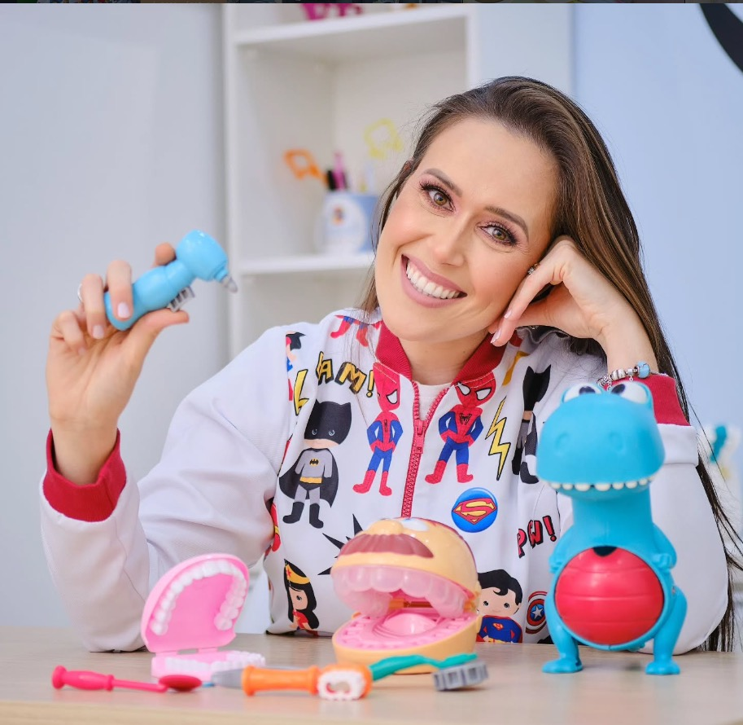
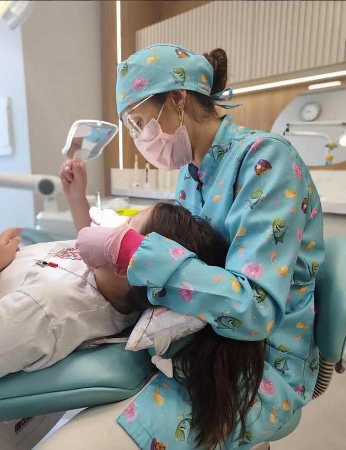
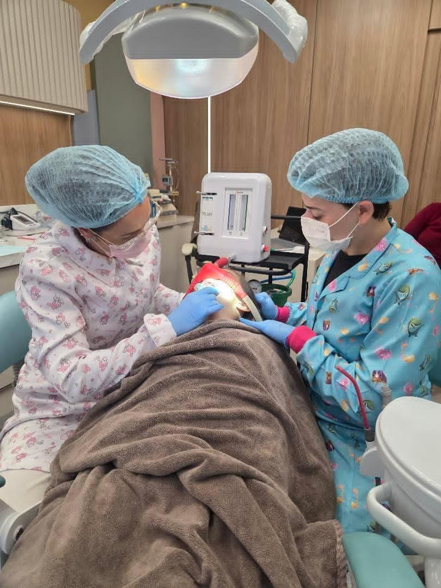
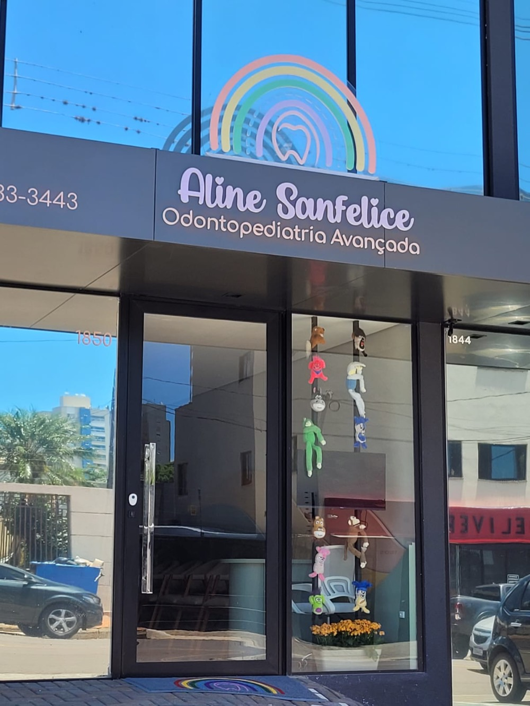
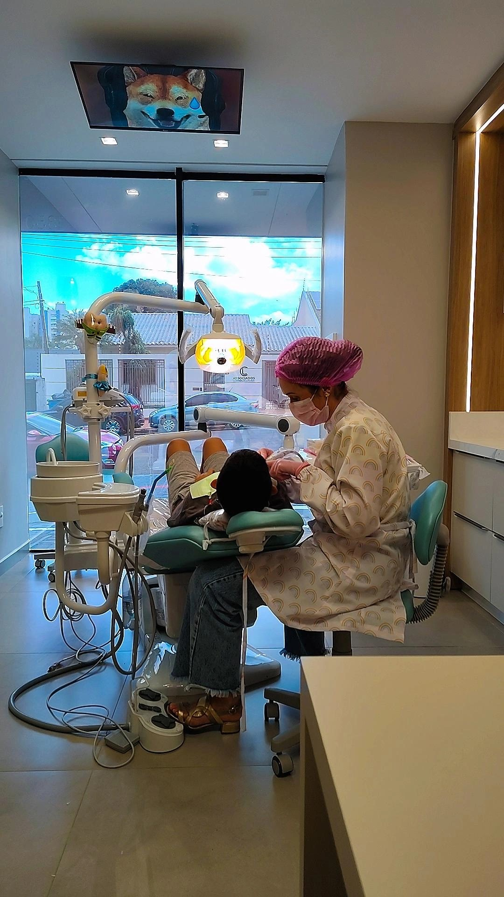

Dra. Aline Sanfelice
Dentista de crianças em Cascavel. Primeiro ela conquista a confiança do seu filho; o tratamento vem depois, no tempo dele.
- Onde
- R. Fortaleza, 1850 · Centro
- Quando
- Seg a sex, 8h às 18h
- No Google
- 5,0 em 38 avaliações
Ela conquista a criança antes de cuidar do dente.
A Dra. Aline Sanfelice é odontopediatra e atende crianças desde bebês. Há famílias que voltam com ela há anos, e elas costumam repetir as mesmas palavras: paciência, delicadeza, carinho.
A consulta é feita para a criança entender o que está acontecendo. Modelos de dentes, brinquedos e muita conversa ajudam o desconhecido a deixar de assustar.
Atendo ele desde bem pequenininho, quando ainda tinha medo e chorava algumas vezes. Depois que eu conquistei a confiança dele, ele se transformou. Agora é super corajoso.

Como é a consulta
Sem pressa e sem surpresas. A criança conhece cada etapa antes de ela acontecer, e você acompanha tudo de perto.

-
Uma primeira conversa
Pelo WhatsApp, você conta a idade da criança, o que te preocupa e como foram as experiências anteriores. As primeiras dúvidas já se resolvem ali.
-
Conhecer o consultório
A criança chega, olha, pergunta. Os brinquedos, o espelho e a TV no teto fazem parte da apresentação.
-
Avaliação no ritmo dela
Cada instrumento é mostrado antes de ser usado. O tempo de adaptação é o da criança, não o da agenda.
-
Um plano conversado
O tratamento é explicado para você com clareza, e cada decisão é tomada junto com a família.
-
O cuidado continua em casa
Você sai com orientações de escovação, alimentação e prevenção para o dia a dia.

Quando a cadeira é mais difícil
Medo intenso, uma experiência ruim no passado, um tratamento mais longo, ou uma criança que tem mais dificuldade com o atendimento. Nesses casos, o caminho é planejado com ainda mais cuidado.
A sedação odontológica é um dos recursos possíveis, nunca o primeiro reflexo. Ela só é indicada depois de uma avaliação que considera:
- a necessidade do procedimento;
- a idade e o comportamento da criança;
- o histórico de saúde e as experiências anteriores;
- a segurança, antes de tudo.
A decisão é sempre conversada com a família.
Tirar dúvidas sobre sedação no WhatsAppMinha filha fez um procedimento com sedação com a Dra. Aline. Foi uma experiência incrível: ela se sentiu segura, não sentiu medo.
O que costuma preocupar os pais
É uma reação natural ao desconhecido. A consulta começa pela aproximação: conversar, mostrar, deixar tocar. A confiança vem antes do tratamento, e o ritmo é o da criança.
Contar sobre o seu filhoA primeira visita é para a criança conhecer o espaço e a Dra. Aline, e para você tirar dúvidas com calma. Em casa, fale do dentista de forma natural e positiva, e nunca como ameaça.
Agendar a primeira consultaIsso é levado em conta desde a primeira conversa. A confiança é reconstruída aos poucos, respeitando os limites da criança e sem comparações.
Conversar sobre issoAlgumas crianças precisam de mais tempo, de mais previsibilidade ou de um plano diferente. Conte como é o seu filho antes da consulta: isso ajuda a preparar o atendimento para ele.
Conversar antes da consultaO acompanhamento pode começar ainda nos primeiros anos, antes de qualquer problema. Você recebe orientações de higiene, alimentação e desenvolvimento dos dentes. O momento certo para cada criança é conversado na consulta.
Perguntar sobre a idade do seu filhoNão. A sedação é indicada só em situações específicas, depois de avaliação individual. Uma conversa ajuda a entender se ela faz ou não sentido para o seu filho.
Ler sobre sedaçãoCartão de crédito, débito e pagamento por aproximação. Há opção de parcelamento; as condições são combinadas pelo WhatsApp.
Perguntar sobre valoresO que as famílias contam
5,0 no Google, em 38 avaliações. Ler todas no Google
Tem um cuidado diferenciado e uma atenção que não havia tido antes. Sendo mãe de criança atípica, é de profissionais como ela que precisamos: que tenham um cuidado muito além da profissão, um acolhimento. E ela tem, com certeza.
Há anos ela acompanha meu filho, e ele ama vir na dentista dele. Paciência total com nossos pequenos.
Minha bebê de 2 aninhos tem má formação na esmaltação dos dentinhos; toda vez de escovar era um caos. […] Graças ao trabalho da doutora, [ela] colabora na escovação, e o sorriso está ainda mais lindo e, principalmente, saudável.
A melhor profissional da cidade para atender crianças, principalmente as crianças TEA. Muito amor, empatia, cuidado.
Foram feitos os procedimentos de sedação para extração e canal. Trabalho muito bem feito; a nenê se recuperou muito rápido. Somos agradecidos pelo carinho e atenção.

Rua Fortaleza, 1850, no Centro de Cascavel
Procure a fachada com o arco-íris no letreiro e os bichinhos de pelúcia na vitrine.
- Endereço
- R. Fortaleza, 1850, Centro
Cascavel, PR · 85810-051 - Horário
- Segunda a sexta, 8h às 18h
Atendimento com hora marcada - De carro
- Estacionamento no local
- Acessibilidade
- Entrada, estacionamento e banheiro acessíveis para cadeira de rodas
- Contato
- (45) 98433-3443, WhatsApp e ligação
O mapa do Google só carrega se você pedir.

O novo consultório está lindo e o atendimento perfeito, como sempre! Minha filha adora a Dra. Aline!
No mesmo consultório
Quando o tratamento pede outra especialidade, a Dra. Aline conta com colegas no mesmo espaço.
- Dra. RayssaOrtodontia e ortopedia facial
- Dr. João FranciscoCirurgia oral e facial
- Dra. MicheliEndodontia
A primeira conversa pode ser por mensagem.
Conte a idade do seu filho e o que te preocupa. A Dra. Aline e a equipe respondem pelo WhatsApp.
- Atendimento
- Segunda a sexta, 8h às 18h, com hora marcada
- Endereço
- R. Fortaleza, 1850, Centro, Cascavel
- @alinesanfelice